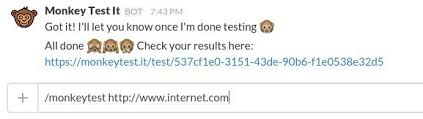
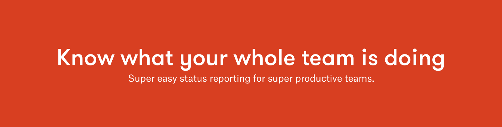
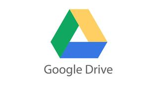

Pixel Kit makes every part of your design work
searchable, it integrates with all other workflow
tools and also provides version control. It also
has a great feature of automatically addidng
comments from slack, meetings and emails to the
designs.
Monkey Test it

Monkey Test it
This Bot does a thorough link check on your
website and notify you of any errors. It
basically clicks every element of the page.
I Done This

I Done This
This bot keeps track of what members of your time
are doing and reduces the need of daily stand-ups.
It saves acomplishment per day and is effective in
track of progress over the long run.
Google+ Hangout
Hangout
Google Hangout's slack integration lets you
make video calls with your workspace easy
without having the need to continously set-up.
Simply type /hangout to launch a Google+ Hangout in
a new window:
That command will provide you with a link that you
can use to quickly hop on a video call.
After opening the video call window, you may have
to login to your google account and also have
the option of adding more participants to the
call beyond which you are added to the meeting room.
Google Drive

Drive
Google Drive is used to store files online by
almost everyone. This plugin links it with slack.
The plugin guides you through the initial set up
and you will be able to share files directly from
slack.
You can also use another plugin to maintain one
directory for the entire workspace to share.
The best part about this app is that the files you
import are easily searchable. Note, though, that they
won't be actually stored in Slack -- they'll continue
to be stored in Google Drive.